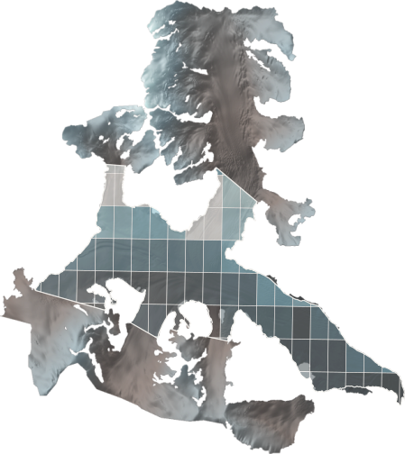
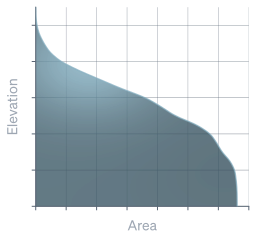

I led a Python-based geodetic mass-balance calculation, translating repeat elevation
rasters into glacier mass change and quantifying uncertainty. Raster visualisation connects that
calculation to the terrain and its summer cloud-cover patterns.
My role
Mass-balance calculation and error quantification
Elevation inputs
Repeat airborne LiDAR elevation rasters
Approach
Python · Classification rasters · Hypsometry
01 / Glacier surface
A reconstructed glacier-surface rendering brings the raster terrain into view. Its faceted surface
communicates spatial structure; the colour and vertical appearance are not a calibrated map of mass
change.
Quantifying mass change
The calculation began with repeat airborne laser-scanning elevation models. The geodetic approach
relates elevation change across the glacier to volume change, then converts that volume to mass
using density assumptions.
Ice-classification rasters informed that conversion. Rock was excluded; literature-based densities
were assigned to the ice classes before expressing the result as water equivalent. I led the
calculation and raster-based error quantification in Python.
01 / Elevation
Compare the surfaces
Read surface change spatially through repeat elevation rasters, retaining the pixel-area
basis of the calculation.
02 / Mass
Convert by class
Use the classification raster to exclude rock and apply the density conversion to the
relevant glacier cells.
03 / Uncertainty
Assess the error
Quantify uncertainty within the raster-based approach, including consideration of pixel size.
Reading change by elevation
Hypsometry provides the elevation-based view: how glacier area is distributed with height and how
surface change varies across that distribution. It connects a spatial raster field to the summaries
used to interpret glacier-wide change.
The visual sequence moves from an aerial view of summer cloud cover, through the terrain and ice
layers, to an elevation–area view. This makes the relationship between individual raster cells and
the glacier-wide calculation easier to follow.

01 / Aerial view & summer cloud cover
The grid overlaid on the glacier represents a survey of cloud-cover percentage during summer
seasons. This survey formed part of the mass-balance work, investigating how spatial patterns of
cloud cover could influence melting.
02 / Terrain, nunataks & ice
The separated layers distinguish subglacial terrain, exposed rock and glacier ice. This
explanatory view connects the mapped surface to the classification used in the mass calculation;
the separation does not represent measured ice thickness.

03 / Elevation–area view
An illustrative hypsometric graphic links glacier area to elevation. The unnumbered axes explain
the elevation–area relationship.
Cloud cover and melting
The overlaid cells represent cloud-cover percentages, giving the surface a second analytical layer
beyond elevation. The aim was to investigate clouds’ influence on melting and place the mass-balance
calculation in its environmental context.
This layer is a cloud-cover survey, not a map of melt rates or elevation change. It supports
investigation of the relationship; it does not by itself quantify a cloud-driven contribution to
mass loss.